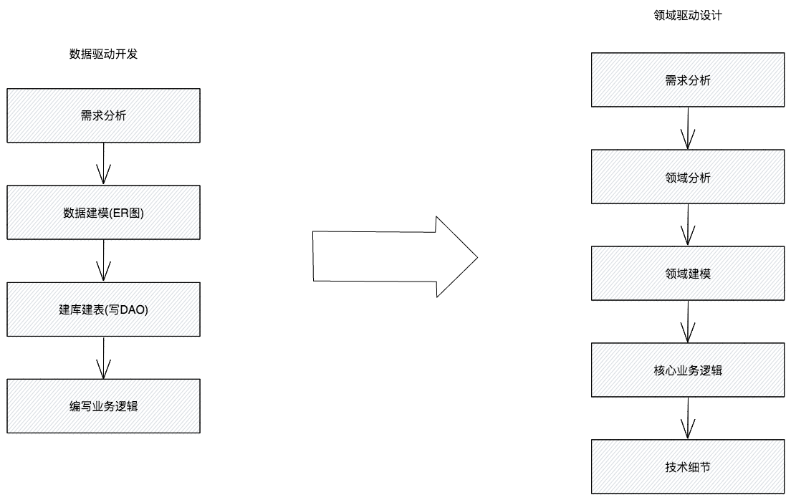

首先看一张图：

想想我们开发模式是不是大多面向数据驱动开发的，对于业务需求，首先是数据建模确定表关系及结构，到技术细节设计，然后进行业务的开发；而对于DDD，需求分析过后，进行领域分析和建模，然后再进行核心的业务逻辑及技术细节。DDD是把业务架构与技术架构纳入统一体系，通过通用的语言，开展业务需求设计，把项目的主要重点放在核心领域（core domain）和领域逻辑，以领域中的模型为基础，进行复杂的设计。让技术人员以及领域专家合作，以迭代方式来完善特定领域问题的概念模型。
但我们在实际业务研发中，并不能为了DDD而DDD，那样会让简单的功能变的复杂，而是借鉴DDD的思想，进行业务与技术的融合设计。例如把业务系统划分为：
在设计时，指导我们要清晰系统业务领域的边界，确认好具体的功能职责，而不能把无关的业务功能模块耦合，否则系统会变得异常的脆弱，最终不得不面临着系统的拆分与优化。
我所负责的业务系统将近10个，每一个业务系统的功能模块都是高聚合的，业务耦合度非常低，所以开展具体的业务需求研发时，不会因为领域边界的问题导致设计变得困难。
参考
https://zh.wikipedia.org/wiki/%E9%A0%98%E5%9F%9F%E9%A9%85%E5%8B%95%E8%A8%AD%E8%A8%88
https://zq99299.github.io/note-book2/ddd/
https://tech.meituan.com/2017/12/22/ddd-in-practice.html
https://gitchat.csdn.net/columnTopic/5a584d86e286423809d4b105?utm_source=juhe